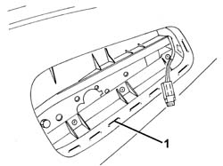
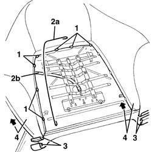
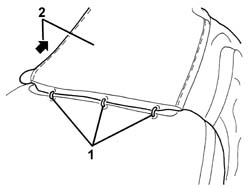
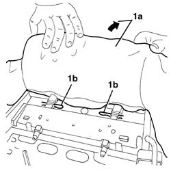
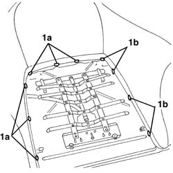
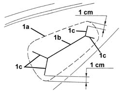

7045A85 Front seat BACKREST COVER, left or right - R.R.
- Path
- Procedures > 70 FITTINGS > 7045 FRONT SEATS > 7045A front seat assembly > 7045A85 Front seat BACKREST COVER, left or right - R.R.
- Kind
- repair procedure (removal / refitting; the operation number is the code)
- Applies to
- all engines; all production periods
- Interactive page
- https://sloeber94.github.io/elrnDB-a156/en/#/3238882
Applies to: all engines; all production periods
 Removing
Removing
 Refitting
Refitting7045A10 l/h or r/h front seat (one) - r+r
7045B10 l/h or r/h front seat head restraint - r+r
7045A25 squab lumbar knob - r r
7045A44 seat interior guard - r r
5580C44 front side bag module one lh or rh r r (if fitted)
- 7045A84 Front set BACKREST COVER - R.R. with seat removed
Applies to: all engines; all production periods
Refitting
Removing- 7045A84 Front set BACKREST COVER - R.R. with seat removed
5580C44 front side bag module one lh or rh r r (if fitted)
7045A44 seat interior guard - r r
7045A25 squab lumbar knob - r r
Applies to: engines: 3.2 V6; all production periods; only with equipment: GTA
Removing
Refitting7045A10 l/h or r/h front seat (one) - r+r
7045A44 seat interior guard - r r
5580C44 front side bag module one lh or rh r r
1. Working in the area of the side Air Bag, remove the clips around the perimeter fastening the cover.

Applies to: engines: 3.2 V6; all production periods; only with equipment: GTA
1. Disconnect the cover retainers.
2. Remove the metal upholstery wire (2a) to release the lumbar adjustment cable (2b).
3. Disconnect the edeges of the cover, connected to one another, on both sides of the seat.
4. Lift the cover up carefully as far as the head restraint.

Applies to: engines: 3.2 V6; all production periods; only with equipment: GTA
1. Using clippers, cut the retaining rings at the base of the head restraint.
2. Completely extract the cover from the backrest.

Applies to: engines: 3.2 V6; all production periods; only with equipment: GTA
1. If necessary, lift up the upholstery (1a) and extract the retainers (1b), then completely remove the upholster (1a) complete with head restraint.

Applies to: engines: 3.2 V6; all production periods; only with equipment: GTA
Refitting
RemovingCheck that the backrest cover is not damaged.
If removed, place the upholstery and head restraint in position and refit the retainers, then extend the upholstery over the backrest frame.
Fit the first part of the backrest cover and secure it using the circlips at the base of the head restraint.
Stretch the backrest cover over the upholstery.
Connect the ends of the cover to one another on both sides of the seat.
Fit the metal upholstery wire and attach the lumbar adjustment cable.
1. Connect the cover retainers (1a). If the backrest cover is new, also connect the retainers (1b) temporarily.

Applies to: engines: 3.2 V6; all production periods; only with equipment: GTA
1. Cut the cover in the area of the side Air Bag, following the instructions given below. Identify the perimeter edge (1a) of the side Air Bag housing. Using cutter, make the cut (1b) then make four cuts (1c) at an angle, stopping 1 cm from the edge as illustrated in the diagram.

Applies to: engines: 3.2 V6; all production periods; only with equipment: GTA
1. Working in the side Air Bag housing, place the cover in position and fit the cover retaining clips.
Applies to: engines: 3.2 V6; all production periods; only with equipment: GTA
5580C44 front side bag module one lh or rh r r
Topics linked from this page (7)
- 5580C44 front side bag module one lh or rh r r
- 7045A10 l/h or r/h front seat (one) - r+r
- 7045A24 squab knob - r r
- 7045A25 squab lumbar knob - r r
- 7045a43 seat exterior guard - r r
- 7045A44 seat interior guard - r r
- 7045B10 l/h or r/h front seat head restraint - r+r
Topics that link to this page (7)
- 5580C86 side bag wiring harness (one) lh or rh - r r or replace
- 7045A21 Front seat BACKREST COVER, left or right - R.R.
- 7045A62 joints of driver`s side front seat lift device - r r with seat disconnected
- 7045A72 front seat mount/guide - passenger`s side r r with seat removed
- 7045A93 Front seat TRIM, left or right - R.R .
- 7045D24 Front seat CUSHION ASSEMBLY COVER (one), left or right - R.R.
- 7045M22 l/h or r/h front seat cushion heat pad - r+r following electrical wiring check